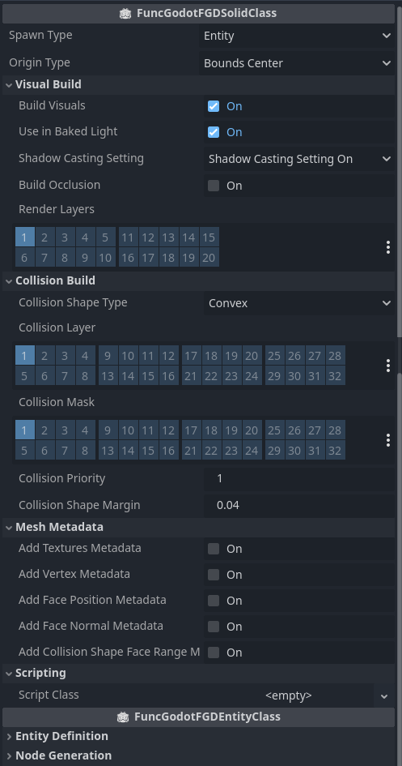

FuncGodot FGD Resources
FuncGodotFGDFile

Resource file used to express a set of FuncGodotFGDEntity definitions. Can be exported as an FGD file for use with a Quake map editor. Used in conjunction with a FuncGodotMapSettings resource to generate nodes in a FuncGodotMap node.
| Property | Type | Description |
| Export File | Bool | Used as a button to build and export the FGD file. Automatically sets to off after exporting. |
| Map Editor | ||
| Target Map Editor | FuncGodotTargetMapEditor | Some map editors do not support the features found in others (ex: TrenchBroom supports the "model" key word while others require "studio", J.A.C.K. uses the "shader" key word while others use "material", etc...). If you get errors in your map editor, try changing this setting and re-exporting. This setting is overridden when the FGD is built via a game config resource. |
| FGD | ||
| Fgd Name | String | FGD output filename without the extension. |
| Base Fgd Files | Array[Resource] | Array of FuncGodotFGDFile resources to include in FGD file output. All of the entities included with these FuncGodotFGDFile resources will be prepended to the outputted FGD file. |
| Entity Definitions | Array[Resource] | Array of resources that inherit from FuncGodotFGDEntityClass. This array defines the entities that will be added to the exported FGD file and the nodes that will be generated in a FuncGodotMap. |
FuncGodotFGDEntityClass

Base entity definition class. Not to be used directly, use FuncGodotFGDBaseClass, FuncGodotFGDSolidClass, or FuncGodotFGDPointClass instead.
| Property | Type | Description |
| Entity Definition | ||
| Classname | String | Entity classname. This is a required field in all entity types as it is parsed by both the map editor and by FuncGodot on map build. |
| Description | String | Entity description that appears in the map editor. Not required. |
| Func Godot Internal | Bool | Entity does not get written to the exported FGD. Entity is only used for FuncGodotMap build process. |
| Base Classes | Array[Resource] | Array of FuncGodotFGDBaseClass resources to inherit Class Properties and Class Descriptions from. |
| Class Properties | Dictionary | Key value pair properties that will appear in the map editor. After building the FuncGodotMap in Godot, these properties will be added to a func_godot_properties Dictionary that gets applied to the generated node, as long as that node is a @tool script with an exported func_godot_properties Dictionary. See Entity Key Value Pairs for more information. |
| Class Property Descriptions | Dictionary | Map editor descriptions for the previously defined key value pair properties. Not required for added properties but recommended. |
| Auto Apply To Matching Node Properties | Bool | Automatically applies entity class properties to matching properties in the generated node. When using this feature, class properties need to be the correct type or you may run into errors on map build. |
| Meta Properties | Dictionary |
Appearance properties for the map editor, eg: size, color, studio, model, etc... See the Valve Developer FGD and TrenchBroom documentation for more information. |
| Node Generation | ||
| Node Class | String |
Node to generate on map build. This can be a built-in Godot class or a GDExtension class.
For GDScript classes use the built-in Godot class they extend from (eg: MyCustom2 > MyCustom1 > Node3D would be "Node3D"). Use the Script Class property found in Solid Class and Point Class to apply your custom GDScript classes to generated nodes. For Point Class entities that use Scene File instantiation leave this blank. There is no restriction on what Node Classes can be generated. |
| Name Property | String |
Optional. Specifies a class property belonging to this entity that will be used to name the generated node upon map build. The node is renamed to
"entity" + name_property prior to being added to the SceneTree and applying func_godot_properties.Overrides the Entity Name Property setting in FuncGodotMapSettings. NOTE: Node names should be unique, otherwise you may run into unexpected behavior! |
FuncGodotFGDBaseClass
Special inheritance class for Solid Class and Point Class entity definitions. Useful for adding shared or common properties and descriptions. Does not have any unique properties on its own but is defined separately to facilitate FGD building and lookup.
FuncGodotFGDSolidClass

FGD SolidClass entity definition, used to define brush entities. A MeshInstance3D will be generated by FuncGodotMap according to this definition's Visual Build settings. If FuncGodotFGDSolidClass Node Class inherits CollisionObject3D then one or more CollisionShape3D nodes will be generated according to Collision Build settings.
| Property | Type | Description |
| Spawn Type | SpawnType |
Controls whether this Solid Class is the worldspawn, is combined with the worldspawn, or is spawned as its own free-standing entity.
|
| Origin Type | OriginType |
Controls how this Solid Class determines its center position. Only valid if Spawn Type is set to ENTITY.
|
| Visual Build | ||
| Build Visuals | Bool | Controls whether a MeshInstance3D is built for this Solid Class. |
| Use In Baked Light | Bool | Sets generated MeshInstance3D to be available for UV2 unwrapping after FuncGodotMap build. Utilized in baked lightmapping. |
| Shadow Casting Setting | ShadowCastingSetting | Shadow casting setting allows for further lightmapping customization. See the Godot documentation for more information. |
| Build Occlusion | Bool | Automatically build OccluderInstance3D nodes for this entity. See the Godot documentation on Occlusion Culling for more information. |
| Render Layers | Int, 3D Render Flags | This Solid Class' MeshInstance3D will only be visible for Camera3Ds whose cull mask includes any of these render layers. |
| Collision Build | ||
| Collision Shape Type | CollisionShapeType |
Controls how collisions are built for this Solid Class.
See the Godot documentation to make an informed decision on what collision type would work best for this entity for your game's needs. |
| Collision Layer | Int, 3D Physics Flags | The physics layers this Solid Class can be detected in. |
| Collision Mask | Int, 3D Physics Flags | The physics layers this Solid Class scans. |
| Collision Priority | Float | The priority used to solve colliding when penetration occurs. The higher the priority is, the lower the penetration into the SolidClass will be. This can for example be used to prevent the player from breaking through the boundaries of a level. |
| Collision Shape Margin | Float | The collision margin for the Solid Class' collision shapes. Not used in Godot Physics. See Shape3D documentation for details. |
| Mesh Metadata | The following properties tell FuncGodot to add a "func_godot_mesh_data" Dictionary to the metadata of the generated node upon build. This data is parallelized, so that each element of the array is ordered to reference the same face in the mesh. | |
| Add Textures Metadata | Bool |
Add a texture lookup table to the generated node's metadata on build. The data is split between an Array of StringName called "texture_names" containing all currently used texture materials and a PackedInt32Array called "textures" where each element is an index corresponding to the "texture_names" entries. |
| Add Vertex Metadata | Bool |
Add a PackedVector3Array
called "vertices" to the generated node's metadata on build. This is a list of every vertex in the generated node's MeshInstance3D. Every 3 vertices represent a single face. |
| Add Face Position Metadata | Bool |
Add a PackedVector3Array called "positions" to the generated node's metadata on build. This is a list of positions for each face, local to the generated node, calculated by averaging the face's vertices to find its center. |
| Add Face Normal Metadata | Bool |
Add a PackedVector3Array called "normals" in the generated node's metadata on build. Contains a list of each face's normal. |
| Add Collision Shape Face Range Metadata | Bool |
Add a Dictionary called "collision_shape_to_face_range_map" to the generated node's metadata on build. Contains keys of Strings, which are the names of child CollisionShape3D nodes, and values of Vector2i where the X represents the starting index of that child's faces and the Y represents the ending index. For example, an element of { "entity_1_brush_0_collision_shape" : Vector2i(0, 15) }shows that this solid class has been generated with one child collision shape named entity_1_brush_0_collision_shape which handles the first 15 faces of the parts of the mesh with collision. |
| Scripting | ||
| Script Class | Script | An optional script file to attach to the node generated on map build. |
FuncGodotFGDPointClass
FGD Point Class entity definition, used to define point entities. PointClass entities can use either the Node Class or the Scene File property to tell a FuncGodotMap what to generate on map build.
| Property | Type | Description |
| Scene | ||
| Scene File | PackedScene | An optional scene file to instantiate on map build. Overrides Node Class and Script Class. |
| Scripting | ||
| Script Class | Script | An optional script file to attach to the node generated on map build. |
| Build | ||
| Apply Rotation On Map Build | Bool | Toggles whether entity will use angles, mangle, or angle to determine rotations on FuncGodotMap build, prioritizing the key value pairs in that order. Set to false if you would like to define how the generated node is rotated yourself. |
FuncGodotFGDModelPointClass

A special type of FuncGodotFGDPointClass entity that can automatically generate a special simplified, scaled, and reoriented GLB model file for the map editor display. Not supported by editors without GLB / GLTF support.
| Property | Type | Description |
| Target Map Editor | TargetMapEditor |
Modifies whether the entity definition uses the studio or model keyword, and how it applies display model scaling.
Options are GENERIC or TRENCHBROOM.
|
| Models Sub Folder | String | Optional display model export sub folder relative to the game path and models folder set in FuncGodotLocalConfig. |
| Scale Expression | String |
Scale expression applied to model. Only used by TrenchBroom. See the
TrenchBroom Documentation
for more information. To set the scale for other editors, set the Default Inverse Scale setting in FuncGodotLocalConfig. |
| Generate Size Property | Bool |
Model Point Class can override the size meta property by auto-generating a value from the meshes'
AABB.
Proper generation requires scale_expression set to a float or Vector3. WARNING: Generated size property unlikely to align cleanly to grid! |
| Generate GD Ignore File | Bool | Creates a .gdignore file in the model export folder to prevent Godot importing the display models. Only needs to be generated once. |